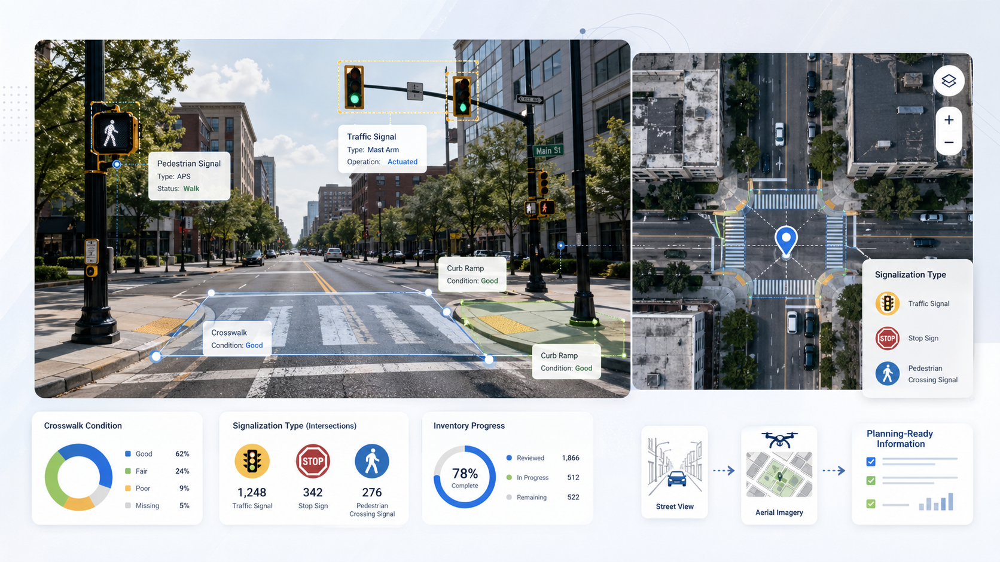

PASDA orthoimagery
Pennsylvania's open imagery program provides recent, high-resolution tiles. We use the most current vintage available for each study area so crosswalk paint is captured as it actually exists today.
Method · Data pipeline
Two computer-vision models, three output layers, one common thread: every detection is traceable back to a piece of public imagery a planner could open and verify in under a minute.
At a glance
Before we walk through inputs, models, and outputs separately. Here's the whole thing in a single picture: what gets detected on the street, what's measured from above, and what lands in your GIS as planner-ready summaries.

Inputs
Pennsylvania's open imagery program provides recent, high-resolution tiles. We use the most current vintage available for each study area so crosswalk paint is captured as it actually exists today.
For each detected intersection, we sample several headings facing into the crossing. This gives the object detector a fair shot at every approach instead of biasing toward one direction.
The three pipelines
Each pipeline owns a single, defensible output. We resisted the urge to merge them into a single model; separate pipelines are easier to retrain, audit, and explain.
Fine-tuned object detection extracts stop signs and traffic lights from intersection-facing imagery. Outputs are point features with confidence scores, exported per neighborhood as GeoJSON and CSV.
Crosswalk markings are segmented from 15 cm/pixel aerial imagery to produce polygon outputs at scale. The U-Net architecture handles per-pixel classification well, even on faded paint.
Perpendicular transects estimate curb-to-curb crossing width to create a screening metric planners can use without commissioning a survey crew.
Process
The diagram is intentionally human-scale. Anything more complicated would obscure the only question that matters in a planning meeting: where did this number come from?
Imagery → models → planner-ready layers. The crossing-width step (not shown) reuses U-Net polygons plus intersection geometry to compute curb-to-curb transects.
Results
The numbers below are pilot-area results. They're meant to set realistic expectations before you trust an output in a memo, not to oversell.
U-Net on PASDA tiles, evaluated against hand-labeled validation tiles.
YOLO fine-tuned on Street View, evaluated by class.
Pilot deployment across the project's eight Philadelphia neighborhoods.
What planners get
Neighborhood-level GeoJSON for stop signs and traffic lights, each tagged with confidence + Street View link.
Detected intersections plus the Street View sampling points the model used, easy to inspect and validate.
Approach-level measurements suitable for flagging unusually wide or high-variance crossings citywide.
U-Net polygon layers from aerial imagery, the foundation for future condition monitoring as imagery refreshes.
Limits and next steps